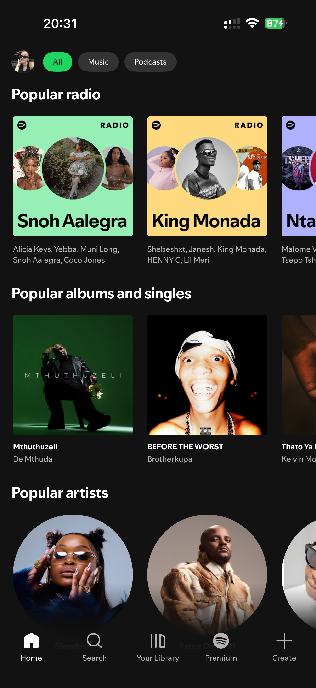
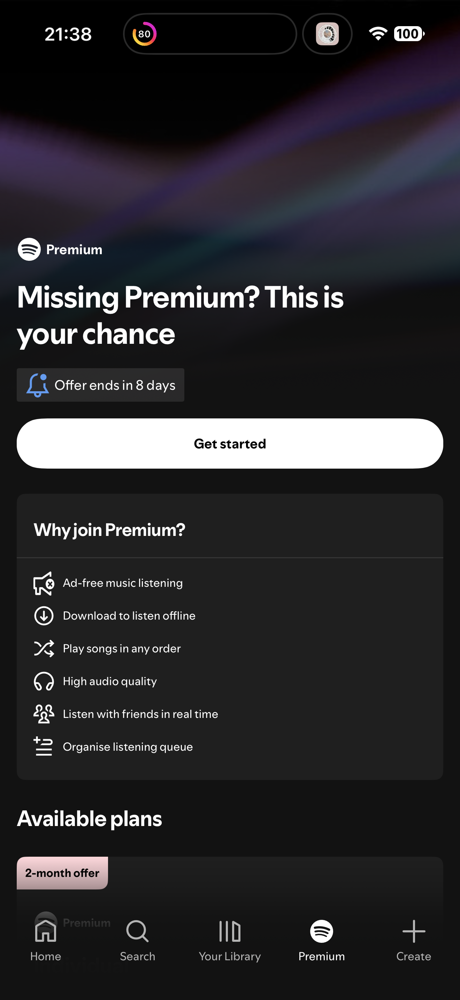
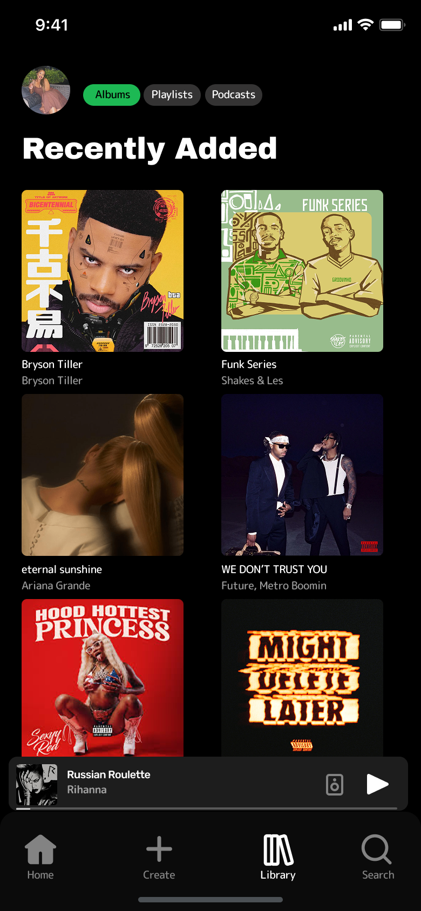
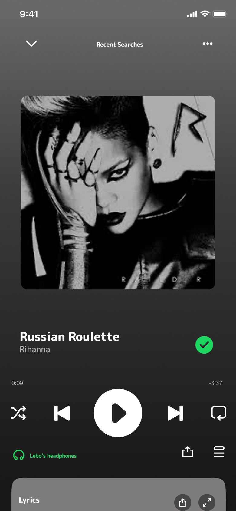

The Problem
Great algorithm. Frustrating interface.
Spotify is the world's most popular music streaming platform, largely due to its superior music discovery algorithm. However, for users switching from Apple Music, the transition isn't always smooth. Despite Spotify's strengths, its mobile interface prioritises discovery and commercial content over personal library access — making it frustrating for returning users who simply want to find and play their own music quickly.
Research Foundation
Personal frustration. Validated by millions.
Before jumping into design, I validated my personal frustrations against broader user feedback. Research gathered from Reddit, Medium, LinkedIn, and Hashnode revealed that my experience was far from unique.
Navigation Confusion
Frequent app updates and inconsistent navigation patterns disorient users, particularly on mobile.
Poor Library Management
Users struggle to sort and filter saved music efficiently — Liked Songs becomes a dumping ground with no meaningful organisation.
Wrong Default Screen
The app opens to a generic discovery page rather than the user's personal library, forcing returning users to navigate away every time.
Platform Priorities vs User Needs
Spotify's interface consistently prioritises the platform's commercial interests — discovery and upselling Premium — over the returning user's actual needs.
Problem Validation
Not just me. 2.3 million people agreed.
The frustrations that led to this redesign weren't isolated. In April 2026, a post on X comparing the interfaces of Apple Music, Spotify, and YouTube Music went viral. The most upvoted response captured the problem in one sentence:
I want an Apple Music UI with Spotify algorithm.
— @noahfergiee · 1.4M views
2.3M
Total Views
36K+
Likes
1.4M
Views on top reply
This wasn't a niche complaint. It was a widely felt, publicly validated pain point — and it is precisely the problem this redesign set out to address.
User Group
One primary user. A frustration shared by millions.
Naledi
26 · Johannesburg · Apple Music Switcher
Naledi has been an Apple Music user for years but is switching to Spotify for its superior music discovery algorithm. She wants to find new artists based on her existing taste — something Apple Music has consistently fallen short on. Once she makes the switch, she hits a wall. The home screen greets her with generic popular content rather than her own library. Her liked songs are buried in a 1,400 song playlist with no way to sort or filter meaningfully. She is not opposed to learning a new app, but this feels like more effort than it should be. What Naledi wants is simple — an uncomplicated app that gets out of the way and lets her enjoy music.
Current UI — Pain Points
Where the existing app breaks down.
Screen 01
Home Screen
The Home Screen itself is not visually broken — the issue is that it is the first thing a returning user sees when they open the app. A screen filled with generic, non-personalised discovery content should not be the default landing experience. Returning users should open to their Library, not Spotify's recommendations.

The current Home Screen — generic discovery content as the default landing experience for every user, every time.
Screen 02
Your Library
Liked Songs and New Episodes are pinned at the top, pushing personal music content down. The filter tabs show Playlists, Podcasts, Albums and Artists — but Songs is missing entirely. Recently Added exists as a sort option but is not visually surfaced. The result is a library that feels disorganised and hard to navigate.

The current Library — Liked Songs pinned at the top, Songs filter tab absent, Recently Added not surfaced.
Screen 03
Premium Tab
A full navigation tab dedicated entirely to upselling Premium. This belongs in Settings, not in the main navigation bar — it occupies prime real estate that should be reserved for features users actually use.

Premium as a main nav item — an upsell occupying the same space as Home, Search, and Library.
Wireframes
The redesigned screens.
The following screens represent the redesigned Spotify mobile experience, focusing on the Library and Now Playing screens where the core pain points were identified.

Redesigned Library — Recently Added grid leads, Songs filter added, Premium removed from nav. Four purposeful tabs: Home, Create, Library, Search.

Redesigned Now Playing — album art takes full prominence, playback controls clearly laid out, lyrics accessible without interrupting the listening experience.
Design Decisions
Three targeted changes. Each tied directly to a pain point.
Rather than attempting a full app overhaul, this redesign focused on three areas directly tied to identified pain points.
01
Default Landing Screen → Your Library
The current app opens to the Home Screen — a generic discovery page with Popular Radio, Popular Albums & Singles, and Popular Artists. The more meaningful intervention here is not a visual redesign of the Home Screen itself, but a change to the app's default behaviour. Opening to Your Library instead of Home immediately gives returning users what they actually came for — their own music. The Home Screen remains as a discovery space, accessible via the nav bar, but it should not be the first thing a returning user sees every time they open the app.
02
Your Library — Restructured
The redesign restructures the library to lead with a Recently Added grid, adds a Songs filter tab, and gives users a clear, scannable view of their music without unnecessary digging. Liked Songs and New Episodes are no longer pinned above personal content — they sit within the appropriate filter tabs. The result is a library that reflects what the user has actually saved, not what Spotify wants to show them.
03
Navigation Bar — From 5 tabs to 4
The current navigation bar contains five tabs: Home, Search, Your Library, Premium and Create. Premium has no place as a main navigation item — it is an upsell, not a feature, and should live in Settings. The redesign removes Premium and reorders the remaining tabs to: Home, Create, Library, Search — four purposeful tabs that reflect what users actually do in the app.
Limitations & Next Steps
What this redesign left intentionally unaddressed.
This redesign was scoped intentionally to three problem areas. As a result, several pain points identified in research — including repetitive recommendations, the absence of in-app social sharing, and ad disruptions on the free tier — were not addressed in this iteration.
The default landing screen change from Home to Library was not something that could be demonstrated through static wireframes alone — this would require prototyping and user testing to fully validate.
The Liked Songs feature also raises a broader question worth exploring further. Spotify's algorithm already learns from listening behaviour passively, making a separate Liked Songs playlist arguably redundant. A next step would be reimagining it as a preference-tuning tool rather than a simple collection playlist.
Reflection
The most valuable lesson was restraint.
This project started from a personal frustration and grew into a focused, research-backed redesign. The most valuable lesson was the importance of restraint — narrowing the scope to three specific problem areas kept the solutions purposeful and directly tied to real user needs.
The problem validation step — finding that 2.3 million people expressed the same frustration publicly — reinforced something important: personal experience is a valid starting point for UX research, as long as you rigorously test it against broader evidence before designing anything.
Next steps would include user testing with Apple Music switchers to validate whether the restructured home screen and library genuinely reduce navigation time.